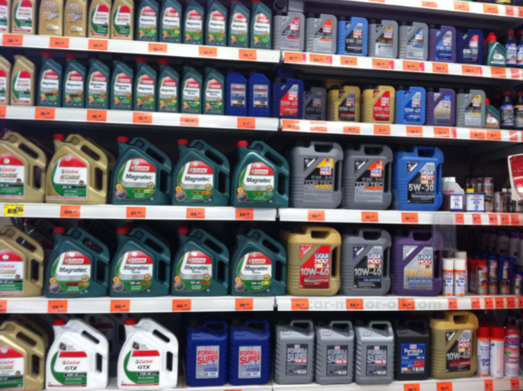
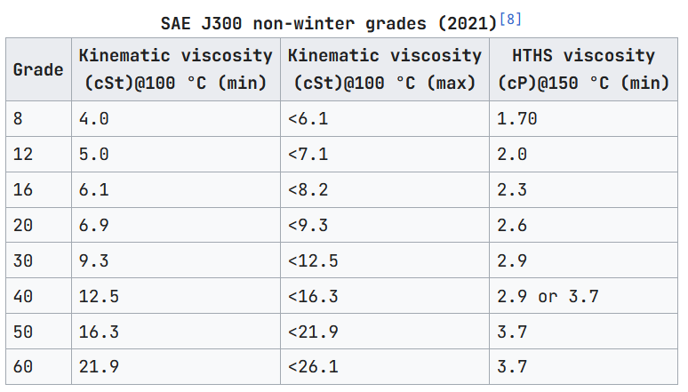

Imagine you've just robbed a bank. You're fleeing on the interstate, going 100, 120, 140 miles per hour. Suddenly, you realize you're low on oil, and your car has gone from a exemplary 20 mpg to a pitiful 18 mpg--at this rate, you'll use all your bank-stealing-money on gas before you even get to the hideout.
You know you need 0W30 owners manual. You rush into a Walmart, and you have to be quick. Sprinting to the automotive aisle, you're greeted by an overwhelming wall of numbers and letters.

10W40? 15W30? What the hell does any of that mean? Where is 0W30? You get choice paralysis, panic, and are shot dead by the police.
This situation could happen to anyone. It is vitally important for every enterprising entreprenuer to learn how to interpret motor oil specifications.
Motor oil is a bit strange; very few customer-facing products prominently display their technical SAE categorization instead of layman-equivalent terms. Looking online, you'll get that the numbers roughly correspond directly with viscocity, or "thickness;" the higher the number, the higher the viscocity.
This oil is about 15 thick when it's W and 40 thick when it's not. Is 20W30 thicker than 15W40? I'm having a stroke.
To understand what "15 viscocity means", we need to define viscocity as a techinical term. Viscocity is the *shear force over the shear rate*: equal to how much force must be applied to any given fluid to move through at a given velocity. This force is caused by a number of weak interactions holding the fluid together: as the molecules roll past each other in the fluid, weak bonds form and break generating the resistance. Honey, a fluid packed with sugars, has a much higher viscocity than water. The large sucrose molecules in the honey act like tree branches and entangle and interlock, resisting flow, while the small H2O molecules slip past each other.
However, the viscocity value of any fluid does not remain constant at different temperatures, and engines famously like changing temperature (an engine is actually an air conditioner in a trench coat and hat). This means that a direct value of viscocity tells you nothing about how the oil will perform in your car, unless you intend to drive your car verrryyyy slowly.
This is why oils usually provide you with two numbers (e.g. 15W40): this doesn't refer to one specification, but two. Both of these individual numbers, separated by the "w" (short for "winter") provide a specific viscocity at a temperature, which gives us a rough description how the oil changes with viscocity with temperatures. These are encoded in the SAEJ300 standard, which provides both the temperature and range of permitted viscocities at temperatures. From the tables below, we can match the first number 15W to a maximum of 7000 cP at -20C and the 40 number to a minimum of 12.5 cSt at 100c.

As you might be able to tell by the arbitrary numbers, wandering set temperature on the winter grade spec, and the mismatching units, the standard is a mess (they could've picked any number for spec 60, and they picked 21.9). However, combustion engines aren't particularily picky with their lubricant. All car manufacturers specifically design their car engines to operate within the total tolerance standards of the SAE standards, with an engine's maximum acceptable viscocity being defined by the "W" value, and it's minimum acceptable viscocity definined by the second value.
Now knowing how to read motor oil specifications, you should now see that if you never turned off your (hot) car and were intending to immediately begin driving very fast you could pick any oil with the correct non-winter grade and completely ignore the winter grade value. Our example entreprenuer from above, having completed a seed round at the local bank, could have grabbed the first XXW30 oil they saw, allowing them go on their way.
Knowing motor oil specifications is essential for your success in the industry, and could even save your life one day.
click here to claim your certification for this course